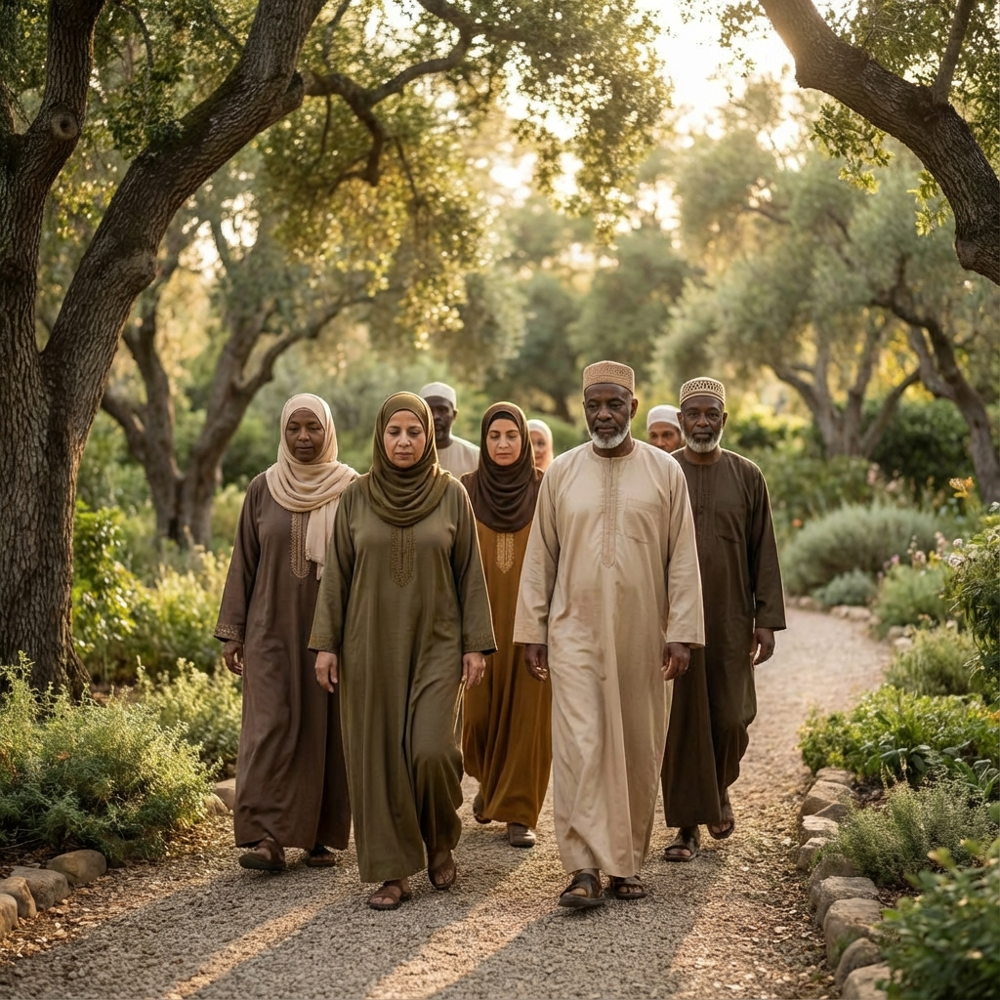
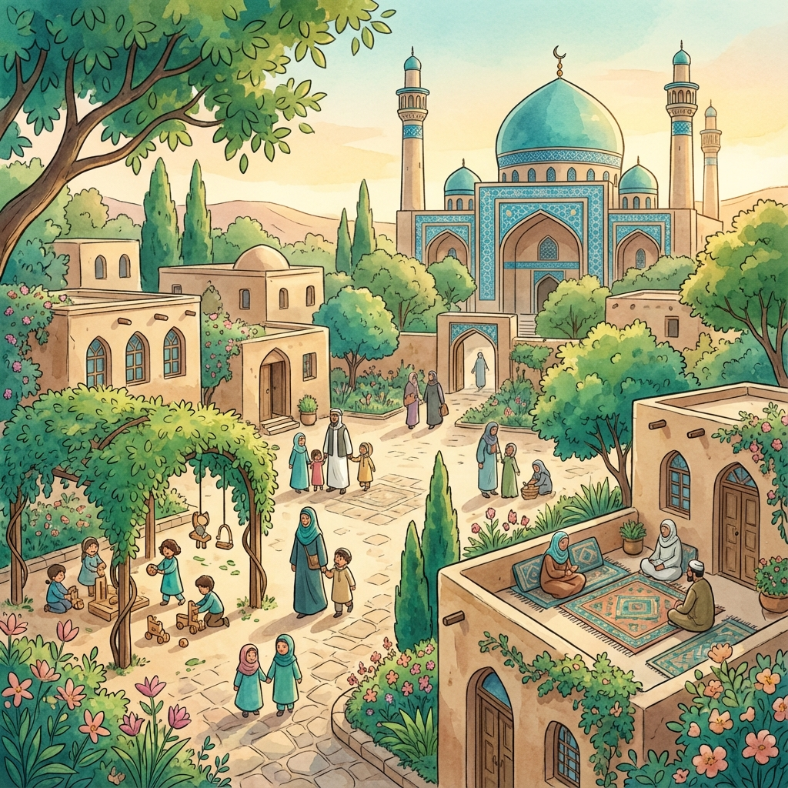
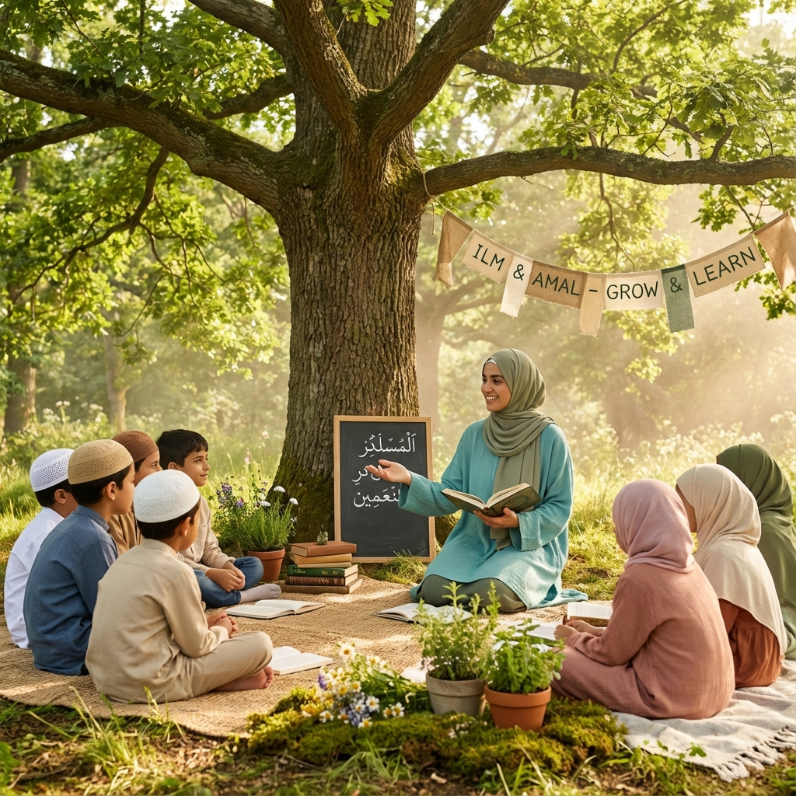

نحو إنسان منسجم مع أصل خلقته، في أسرته وتربيته ونمط حياته
"فطرة" هو مشروع لتحرير الإنسان من التشكيل القسري، ورده إلى نفسه كما خلقه، عبدًا لله، زوجًا أو زوجة، أبًا أو أمًا، منسجمًا مع طبيعته، مرتبطًا بسنن الكون، فإننا برسالته في الأرض.
"فطرة" هو مشروع لتحرير الإنسان من التشكيل القسري، ورده إلى نفسه كما خلقه، عبدًا لله، زوجًا أو زوجة، أبًا أو أمًا، منسجمًا مع طبيعته، مرتبطًا بسنن الكون، فإننا برسالته في الأرض.


"إحياء الفطرة في الإنسان والأسرة والمجتمع، وتحريرهم من التشكيل الصناعي الذي فرضته الحداثة والعولمة، وتوجيههم نحو سنن الله في الخلق والتكوين، بما يحقق الاكتمال النفسي والاجتماعي والروحي."
تسعى رسالة مشروع فطرة إلى إعادة التوازن للحياة الإنسانية من خلال العودة إلى الأصول والقيم التي تتوافق مع الطبيعة البشرية كما خلقها الله.
يعيد الإنسان إلى ذاته وفطرته
حول الأسرة والهوية
من خلال إعادة الرجل والمرأة إلى دورهما الطبيعي
من خلال بناء مجتمع فطري يعيش وفق مبادئ الفطرة
ملتقى المعرفة والحوار والتكوين
طلائع شبابية تمثل المشروع وتبلّغ رسالته
للأطفال واليافعين: بيئات حية سليمة
لرد الانحرافات وتثبيت الفطرة
في اللباس، والطعام، والطب، والسكن، والتعليم
هو شاب أو شابة يحمل رسالة "فطرة" في نفسه، ويجسدها في حياته، ويمثلها في محيطه، ويساهم في نشرها من خلال القدوة، والكلمة، والمبادرة. هو الطليعة الفكرية والوجدانية لهذا المشروع.
تمثيل الفكرة بسلوك راقٍ وأسلوب متزن، ونشر الفكر في محيطه
في المجالس، والأنشطة، والمنصات
تعرّف بالمشروع وقيمه
عبر انتقاء شباب قادر على حمل رسالة المشروع
تطويرية لفريق المشروع
للتعاون والتكامل
روح مبادرة ووعي مجتمعي
استعداد للمشاركة التطوعية في الفعاليات والتكوين
إيمان عميق بمبادئ المشروع ورسالته
سلوك خلقي منسجم مع قيم الإسلام والفطرة
قدرة على التأثير الإيجابي بالحكمة والرحمة
"بناء جيل يعيش فطرته في فهمه لذاته، وفي أسرته، وتربيته، وسلوكه، ويقدّم نموذجًا حضاريًا بديلاً في زمن التيه والاغتراب."
يهدف مشروع فطرة إلى إعادة الإنسان إلى جذوره الطبيعية وتكوينه الأصيل، بعيدًا عن التشويه الذي فرضته الحضارة الحديثة على الفطرة الإنسانية.
دعم نموذج الزواج الطبيعي بين الذكر والأنثى كما أراد الخالق
إعادة المرأة إلى دورها الطبيعي في التربية والرعاية والسكن، وتقدير هذا الدور كبُعد حضاري وليس وظيفة هامشية
حماية الطفل من الانفصال المبكر عن الوالدين بفعل أنظمة مفروضة
الأسرة وفق الفطرة: ترسيخ القوامة التكاملية في الزواج، حيث يتحمل الرجل القيادة بالرعاية والمسؤولية، وتؤدي المرأة دورها الطبيعي في السكن والعطف وبناء الاستقرار الداخلي، في انسجام متكامل لا صراع.

التربية على الفطرة: بدائل تربوية تحترم النمو الطبيعي والعاطفي للطفل
والتربية الحرة، والمناهج المرنة
لا برمجته، وتحفيز التفكر لا الحفظ
وتنوع الذكاءات
نمط العيش الفطري: مقاومة العولمة في المأكل والملبس ونمط العيش، عبر العودة إلى البساطة واللباس الساتر، والغذاء الحقيقي غير الصناعي
للأنماط الاستهلاكية الغربية
والارتباط بالأرض والطبيعة
والاعتدال في حاجات الجسد والروح
نحو إنسان منسجم مع أصل خلقته، في أسرته وتربيته ونمط حياته
"فطرة" هو مشروع حضاري إنساني شامل، يسعى لإعادة الإنسان إلى أصل خلقته كما أرادها الله تعالى: نقيًّا، سويًّا، منسجمًا مع سنن الكون، متصالحًا مع طبيعته، مستقرًّا في أسرته، راشدًا في تربيته، معتدلًّا في نمط عيشه، ومتحررًّا من التشكيل القسري الذي فرضته الحداثة والعولمة.
مشروع فطرة هو مبادرة حضارية إسلامية شاملة تهدف إلى إعادة الإنسان إلى فطرته الأصيلة كما خلقه الله، من خلال برامج تربوية ومجتمعية تركز على الأسرة والتعليم ونمط الحياة.
يمكنك الانضمام كسفير عبر التواصل معنا مباشرة. نبحث عن شباب وشابات لديهم روح المبادرة، إيمان عميق بمبادئ المشروع، واستعداد للمشاركة التطوعية في نشر رسالة الفطرة.
يقدم المشروع نادي فطرة الثقافي، مخيمات للأطفال واليافعين، حملات فكرية ومجتمعية، مبادرات معيشية، وبرامج تكوين لسفراء الفطرة.
معظم أنشطة المشروع تعتمد على التطوع والمشاركة المجتمعية. بعض البرامج قد تتطلب رسومًا رمزية لتغطية التكاليف التشغيلية.
التعليم وفق الفطرة يحترم النمو الطبيعي والعاطفي للطفل، يركز على تنمية الشخصية بدلاً من البرمجة، يحفز التفكر لا الحفظ، ويراعي الفروق الفردية وتنوع الذكاءات.
انضم إلى مشروع فطرة اليوم وكن سفيرًا للتغيير في مجتمعك. معًا نعيد بناء جيل منسجم مع فطرته.